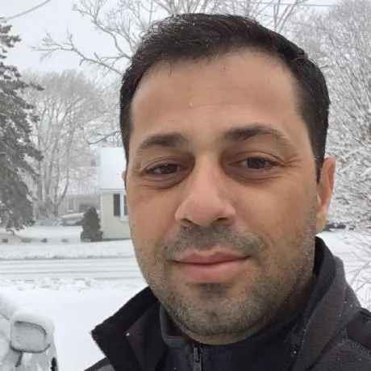
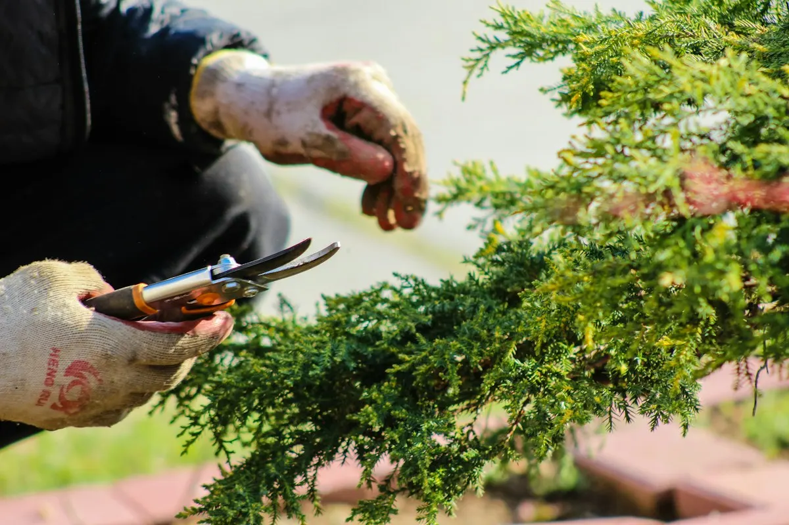
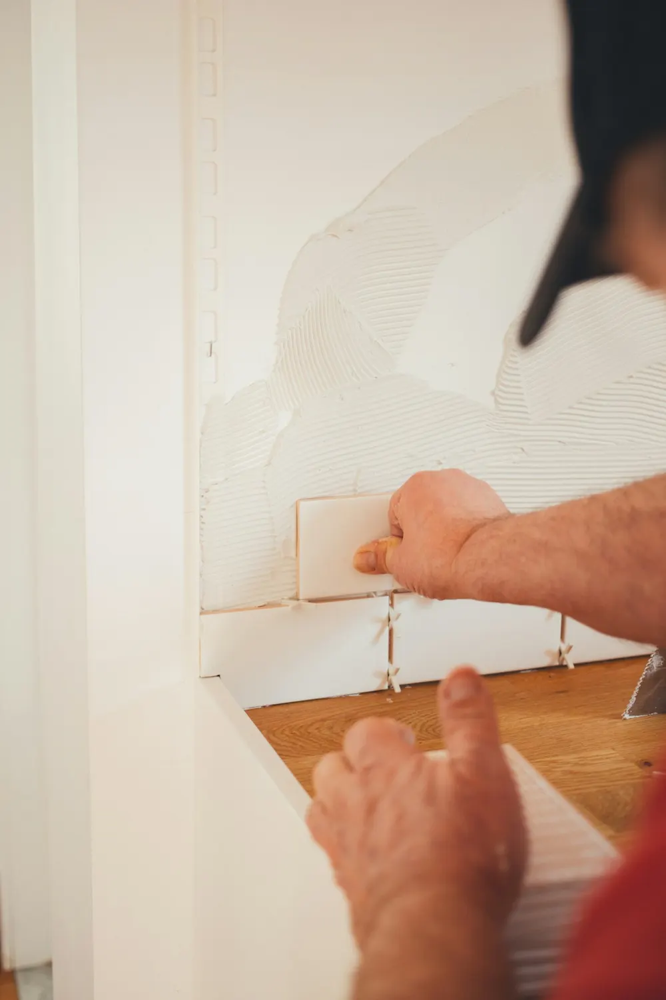
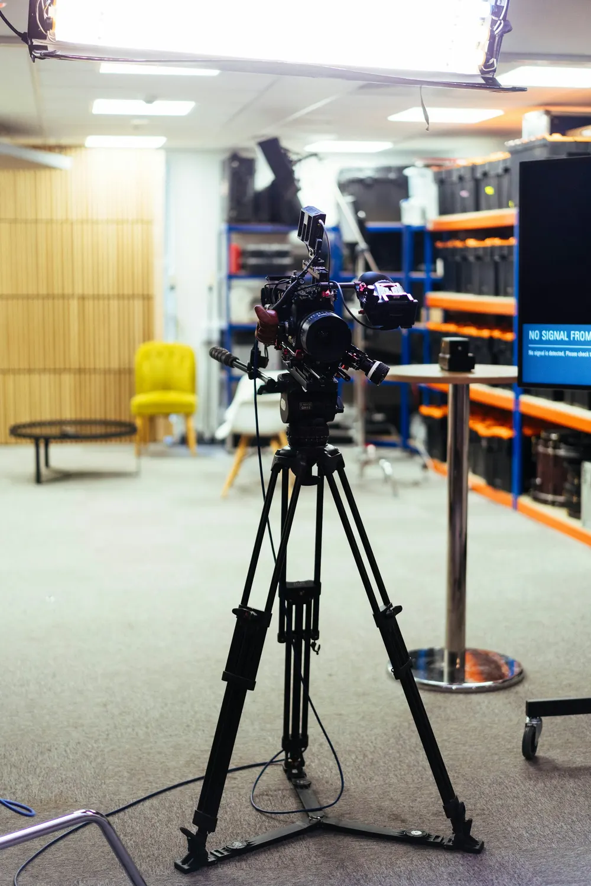

Fabiano Couto
I analyze data and systems for large companies and industries across Brazil: SQL, Oracle, the Sankhya ERP, KPIs and integrations. A career built on partnerships that last for years. Analiso dados e sistemas para grandes empresas e indústrias do Brasil: SQL, Oracle, ERP Sankhya, indicadores e integrações. Uma carreira feita de parcerias de anos.

Every job became a partnership of years.Cada trabalho virou uma parceria de anos.
I don’t change jobs often. Where I go, I stay and grow with the people who trust my work. Não troco de emprego com facilidade. Onde eu entro, eu fico, e cresço junto com quem confia no meu trabalho.
-
4yearsanosDays InnGeneral maintenance, U.S.Manutenção geral, EUA
-
3yearsanosTGI FridaysLine cook, U.S.Cozinheiro de linha, EUA
-
20yearsanosTV Gazeta (Rede Gazeta)Master control, camera and editingControle mestre, câmera e edição
-
TodayHojeHero1Systems and data analystAnalista de sistemas e dados
EfficiencyEficiência
Ran three kitchen stations at once during peak hours and kept a busy hotel guest-ready every day.Tocava três praças da cozinha ao mesmo tempo no horário de pico e mantinha um hotel movimentado pronto para os hóspedes todos os dias.
HonestyHonestidade
Trusted for two decades with live TV, and today with the financial data of client companies.Durante duas décadas me confiaram a TV ao vivo; hoje me confiam os dados financeiros das empresas clientes.
CommitmentCompromisso
Twenty years with one employer. On time, every time, and in it for the long run.Vinte anos na mesma empresa. Pontual sempre, e pensando no longo prazo.
What I help you see clearlyO que eu te ajudo a enxergar de forma clara
Dashboards & BIDashboards e BI
Interactive dashboards inside Sankhya itself, with filters, drill-down and export.Painéis interativos dentro do próprio Sankhya, com filtros, detalhamento e exportação.
Revenue, raw materials & marginFaturamento, matéria-prima e margem
Accurate figures for revenue, raw material cost and profit margin, each one traced back to its source.Indicadores precisos de faturamento, custo de matéria-prima e margem de lucro, com cada número rastreado até a origem.
HR & productionRH e produção
Complete HR and production indicators, so each area can follow its own results.Indicadores completos de RH e de produção, para cada área acompanhar o próprio resultado.
Goals & salesMetas e vendas
Goals vs. actuals and sales by rep, customer, region and product, at the level of detail management needs.Metas x realizado e vendas por vendedor, cliente, região e produto, no nível de detalhe que a gestão precisa.
How I got here.Como cheguei até aqui.
From hands-on work to data analysis, each stage prepared me for the next. Do trabalho manual à análise de dados, cada fase me preparou para a seguinte.
-
01Early yearsAinda jovem
Maintenance & hands-on workManutenção e trabalho manual
I started out with strength, honest work and determination.Comecei com força, trabalho honesto e determinação.
Days Inn and TGI Fridays, Hyannis MADays Inn e TGI Fridays, Hyannis MA -
0220 years20 anos
TelevisionTelevisão
With focus and dedication, I worked across several areas of a major TV station.Com foco e dedicação, passei por várias áreas de uma grande emissora.
TV Gazeta (Rede Gazeta) -
03TodayHoje
Systems & data analysisAnálise de sistemas e de dados
Experience earned through study, focus, hard work and dedication, serving large companies and industries across Brazil.Experiência conquistada com estudo, foco, trabalho e dedicação, atendendo grandes empresas e indústrias do Brasil.
Hero1 Tecnologia e Negócios
Recent certificationsCertificados recentes
People Management and NegotiationGestão de Pessoas e Negociação
Universidade Cruzeiro do Sul · Online · 40 hours · October 2026Universidade Cruzeiro do Sul · On-line · 40 horas · outubro de 2026
Computer ForensicsPerícia Forense Computacional
Universidade Cruzeiro do Sul · Online · 40 hours · September 2026Universidade Cruzeiro do Sul · On-line · 40 horas · setembro de 2026
Where it all began.Onde tudo começou.
In Hyannis, Massachusetts, I spent years in hotel maintenance, grounds and landscaping, and a high-volume kitchen. I also install ceramic tile. Em Hyannis, Massachusetts, passei anos na manutenção de hotel, em áreas externas e paisagismo e numa cozinha de alto volume. Também faço assentamento de piso cerâmico.
Still available for hands-on work in maintenance, grounds, kitchen and hospitality, done with efficiency, honesty and commitment. Continuo disponível para trabalho manual em manutenção, áreas externas, cozinha e hotelaria, feito com eficiência, honestidade e compromisso.
Download resume (PDF)Baixar currículo (PDF, em inglês)

Two decades in live television.Duas décadas de televisão ao vivo.
At TV Gazeta, part of Rede Gazeta, I worked across several areas. I ran master control, a room full of monitors and equipment where every second on air depends on the operator, and I worked as a camera operator and video editor. Na TV Gazeta, da Rede Gazeta, passei por várias áreas. Operei o controle mestre, uma sala cheia de monitores e equipamentos onde cada segundo no ar depende do operador, e trabalhei como cinegrafista e editor de vídeo.

After that, through study, focus, hard work and dedication, I moved into systems and data analysis, serving large companies and industries across Brazil. Master control taught me to watch many signals at once and act before a problem reaches the viewer. A good dashboard does the same job for a business. Depois desse período, com estudo, foco, trabalho e dedicação, cheguei à análise de sistemas e de dados, atendendo grandes empresas e indústrias do Brasil. O controle mestre me ensinou a acompanhar muitos sinais ao mesmo tempo e agir antes que o problema chegue ao telespectador. Um bom dashboard faz o mesmo por uma empresa.
Let's work together.Vamos trabalhar juntos.
Available for systems and data analyst roles, Sankhya projects and hands-on work in maintenance, kitchen and hospitality. I answer in Portuguese or English. Disponível para vagas de analista de sistemas e de dados, projetos Sankhya e trabalho manual em manutenção, cozinha e hotelaria. Respondo em português ou inglês.